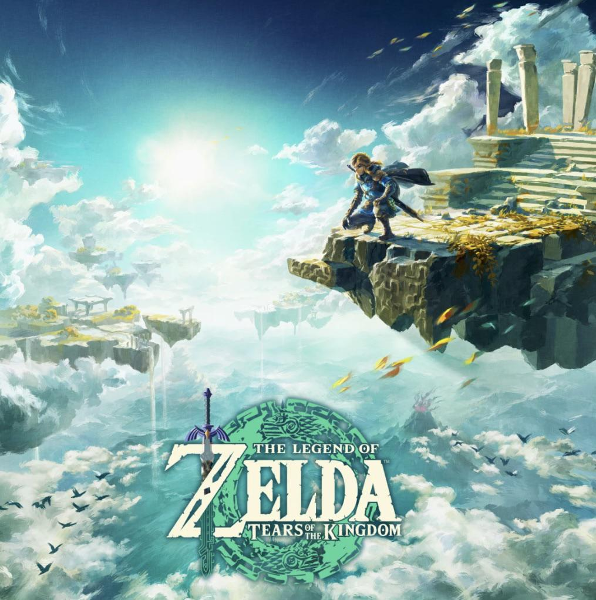

Tears of the Kingdom erweitert die offenen Strukturen von Breath of the Wild um vertikale Erkundung, Crafting-Mechaniken und komplexere Physik-Puzzles. Das Spiel vertieft Systeme und bietet mehr Freiheit für kreative Problemlösungen.
| Titel | The Legend of Zelda: Tears of the Kingdom |
| Veröffentlichung | 12. Mai 2023 |
| Plattform | Nintendo Switch |
| Entwickler | Nintendo EPD (mit Monolith Soft) |
| Produzent | Eiji Aonuma |
| Komponist | Various |
Inhaltlich erweitert Tears of the Kingdom die BotW-Formel um vertikale Erkundung: Himmelsinseln, Unterweltschichten und das Bauen/Modden von Fahrzeugen/Strukturen als Kernmechaniken. Crafting und kombinatorische Physikrätsel werden weiter ausgebaut; Spieler können Materialien und Komponenten kreativ kombinieren. Die Narrative verknüpft ökologische, mythische und politische Elemente mit stärkerer Systemtiefe, während optionaler Content und emergente Herausforderungen die Spielwelt dichter machen. Technisch bleibt das Game ein offenes Sandbox-Design, das Spieler-Kreativität belohnt.